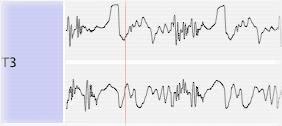

In the timeline frame all active transmitters are listed vertically, where each row shows the transmitter's trajectory. The transmitter's name is shown on the left margin and is used for selection or deselection purposes.
Each trajectory is separated into a horizontal X-position view and a vertical Y-position view. The visible time window is determined by the timeline scrollbar. Depending on the degree of zoom, a different downsampled version of the trajectory is shown. Repeatedly increasing the zoom allows you to zoom to 'sample level'. You can alter the trajectory by directly 'drawing' into the X and Y views, using the timeline pencil tool. Note that the blending mode is useful to prevent sudden jumps when drawing directly. However, usually you'll want to edit trajectory tracks by using tools on the surface, such as the surface line tool or surface pencil tool.
Portions of the trajectory can be removed, cutted, copied and pasted using the Edit menu. The menu affects all currently selected transmitters and the time window specified by the timeline selection which can be adjusted in the timeline axis or by using the timeline pointer tool. The selected transmitter's trajectories can be filtered inside the timeline selection by calling the 'Filter Trajectories' item from the Timeline menu.